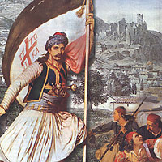

Το κάστρο της λευτεριάς
 Τα περισσότερα κάστρα στα χρόνια της Τουρκοκρατίας ήταν κατοικίες Τούρκων (στης Βόνιτσας παρέμενε η τουρκική φρουρά, στο Χλεμούτσι είχε την έδρα του ο βοεβόδας της περιοχής, στης Καρύστου ζούσαν περισσότερες από 400 οικογένειες). Με την έναρξη του Αγώνα τα κάστρα αποτελούν τους πρώτους στόχους των εξεγερμένων Ελλήνων. Το κάστρο των Σαλώνων πρόσφερε αρχικά καταφύγιο στους τούρκους που κατοικούσαν στην πόλη. Όχι όμως για πολύ. Πολιορκήθηκε από το Δεσπότη Σαλώνων Ησαΐα, τον Αθανάσιο Διάκο, το Δυοβουνιώτη, τον Πανουργιά και τα παλικάρια τους. Είναι το πρώτο κάστρο που έπεσε σε ελληνικά χέρια στα χρόνια του απελευθερωτικού αγώνα (10 Απριλίου 1821). Στη συνέχεια της επανάστασης πέρασε πάλι στην κατοχή των Τούρκων, μέχρι να παραδοθεί οριστικά στους Έλληνες το 1828. | ||